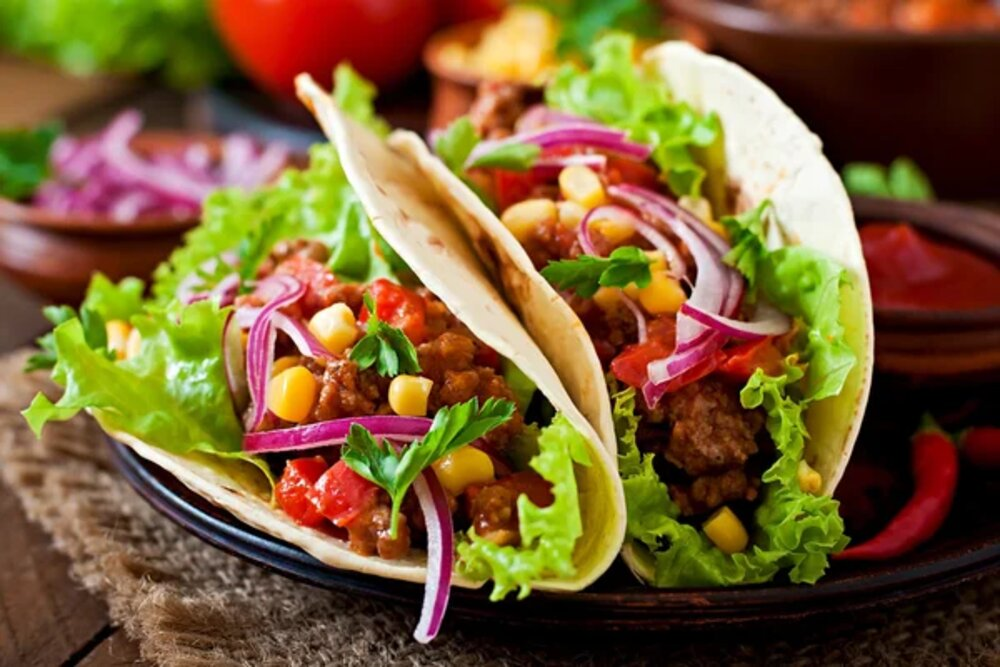

Smash Burger

Ingredients
- 1 pound ground beef
- 1 (1 ounce) packet taco seasoning mix, divided
- 1 (16 ounce) can refried beans
- ⅔ cup water
- 2 avocados
- 1 tablespoon sour cream
- salt and black pepper to taste
- 12 (7 inch) flour tortillas
- 2 cups shredded Cheddar cheese
- 1 cup shredded lettuce
- 1 large tomato, chopped
- ¼ red onion, chopped
- ½ cup sour cream
How to prepare it
- Place the ground beef in a skillet over medium heat, and sprinkle about 3/4 of the packet of taco seasoning over the meat. Cook and stir the ground beef, breaking it up as it cooks, until the beef is browned and crumbly, 10 to 15 minutes. Drain the excess grease.
- Mash the refried beans with the water in a small saucepan, and sprinkle with the rest of the seasoning packet. Heat the refried beans over low heat until simmering.
- Preheat oven to 300 degrees F (150 degrees C). Place the crisp taco shells on a baking sheet, and warm them in the preheated oven for 3 to 5 minutes.
- To make the guacamole, peel, seed, and mash the avocados in a bowl with 1 tablespoon of sour cream, the lime juice, and salt and pepper to taste, and set aside.
- To build the tacos, spread each flour tortilla with about 2 tablespoons of heated refried beans. Wrap the tortilla gently around a crisp tortilla shell. Spread about 2 tablespoons of ground beef along the bottom of the crisp shell, and sprinkle about 2 tablespoons of shredded Cheddar cheese on top of the meat. Top the cheese with shredded lettuce, a sprinkle of chopped tomato and onion, and a dollop of sour cream and guacamole.
Return to top
Return to main page